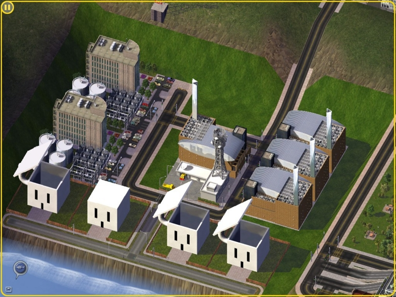

そろそろ原発問題についてひとこと言っておくか。
公開日：

思うところはいろいろあって、書こう書こうと思っていたのだけど、考えをまとめるのが延び延びになり、いつの間にかあの事故から1年以上が経過していた。その間、自分の考えは首尾一貫していたと自負するのだけど、内にためているだけでは何の役にも立たないと思うので、筆足らずながら自分の考えを書き記しておきたい。
僕は原発推進派です。でも、場合によっては即時廃止もありじゃないかな
基本的に、僕は原発推進派。原発は動かしていても止めていても、たいしてリスクが変わらないし、現状の経済が「原発ありき」で組み立てられている以上、即時廃止は難しい。現実的に考えて、原発を完全に廃止するにしても、一度再稼働させて廃止までの猶予期間を設けるべきだと思う。わざわざヒステリックにハードランディングさせることもなかろう、というのが僕の考え。
ただ、国民のコンセンサスが「即時廃止」にあるのならば、それを採るのもやむなしだと思う。ただし、それには条件がある。
どこまで覚悟があるの？
それは「一度決めたら撤回しない」ということ。
原発継続にも、原発廃止にも、それぞれある程度筋の通った理論があり、そのデメリットを完全に予測することはできない。つまり、そのどちらかを選択することは、「どちらがよいか」という効用に基づく選択ではなくて、「どちらにすべきか」という価値判断に基づく選択を強いられているということ。
価値判断に基づく選択の例としてわかりやすいものに、死刑制度の是非がある。そのどちらにも理があり、たとえばノルウェーは「死刑廃止」を理念として選択している。しかし、それには代償がある。
93人が連続テロの犠牲となったノルウェーで、最高刑である禁錮21年は軽過ぎるとして、 アンネシュ・ブレイビク容疑者（32）に死刑や終身刑の適用を求める声が広がり始めている。
同国では1979年に死刑が全廃されており、どんな重罪でも収監は原則21年まで。今回の テロ事件に当てはめると、最高刑が適用されたとしても1人の殺害につき刑期は82日ということになる。
禁錮21年の「最高刑」に不満＝テロ容疑者に死刑求める声も―ノルウェー連続テロ（元記事は削除済み）
それでもノルウェー国民は「死刑廃止」を維持している。これはとても"根性の要る"ことだ。「死刑存置」派の僕でも、もし仮にノルウェー国民として生まれていれば、この選択を誇りに思うことだろう。
話を原発問題に戻そう。
原発の「再稼働反対」「即時廃止」には、さまざまな経済的な悪影響が影響される。電気代が上がったり、計画停電が必要だったり、ひいてはこの不景気に産業が停滞・空洞化する恐れもある。それをみんなはどこまで覚悟しているのだろう？
経済とは「アテにすること」の連鎖と言える。コンビニに行けば100円でパンが買える、総武線に乗れば30分で市川から市谷に行ける、蛇口をひねれば水が出る、といったことを「アテ」にできるから、その次の次を考えた投資や信用が生まれて経済が回る。「アテ」の連鎖が切れれば、信用はマイナス方向に回収され、いわゆる「経済が収縮」するわけだ。
最悪、「再稼働反対」という現状の路線でいくのはそれはそれでアリだ。けれど、それが「アテ」にできないのでは困る。あとになって簡単に覆されるのは非常に困る。企業は電力供給の不安に対して、どのような対策を採ればいいのだろう。それを決めるにしても、「再稼働」か「そのまま廃止」かが決まらないことには、意思決定できない。
――稼働中の原発が全停止した例はあるのか。
（北大大学院・奈良林教授）「ソビエト連邦（現ウクライナ）のチェルノブイリ原子力発電所の事故の４年後、ウクライナで12基あった原発がすべて停止した。脱原発に向けた国民の意識が高まったためだ。それまではおよそ電力の半分が原発だったが、ロシアから天然ガスの供給を受け、電力を賄おうとした」
「ところが、電力供給が不安定となり、停電が頻発。工場の生産が停止したり、暖房が稼働しなくなったりする事態を招いた。そのため製造業などの海外流出を招き、経済が悪化。失業者が町にあふれた。天然ガスの費用をロシアに払うことが難しくなり、結局は原発を再稼働した。経済の停滞は東日本大震災の被災地の復興を遅らせることになる。日本はウクライナの先例から学ぶ必要がある」
個人的には必ずしも「日本はウクライナの先例から学ぶ必要がある」とは思わないけれど、原発の再稼働に反対するなら、最悪のケースとしてそれを考慮しておく必要はある。第三次石油ショックが発生しても、トイレットペーパーの買いだめに走らない程度の民度と覚悟がほしい（そのかわり、原発継続派はセシウムまみれの野菜でもニコニコ食べるぐらいの気概がほしいわけだけど）。中途で簡単に方針を転換してしまうことは一番無駄であり、避けるべき。ウクライナという前例があるのに同じことをやってしまっては、それこそバカと言われてもしょうがない。空気で簡単に意見を変える人こそが、一番の迷惑だ。
所詮、原発の継続・廃止のどちらを選んでも、それなりのリスクはある。なのでそれは、どちらを主体的に選びとるか、どちらが納得のできる選択なのか、という価値判断の問題に帰着する。だったら、せめて揺るぎのない、あとから誇りに思える選択をしたい。――けれど、原発再稼働反対のほうの選択肢は、現状を見るに、どうせ最後まで貫けないだろうな、というのが個人的な実感。
さいごに――立場の一貫性と技術先進国としての責任
原発問題に関して言いたいことの多くはこれで尽きたけれど、数点、言い足りなかったことを書き足しておく。
まず第一に、今回の事故で教訓とすべきは「組織設計の脆弱性」ではないかという点。原発を推進する立場の経産省と、原発の安全をチェックして歯止めをかけるべき安全保安院がなれ合う関係だったのがそもそもの間違いだ。チェック＆バランスという緊張がない組織関係は、必ず腐敗する。本来なら賛成派と反対派が殴りあっているぐらいが安全のためにはちょうどいいので、原発の安全性チェックといった権限は環境省あたりに付属せしめて、不正やごまかしを発見すれば彼らの得点になるように制度設計するのが、インセンティブコントロールという点では望ましい。原発推進派であっても、利権の恩恵を受けるごく一部をのぞいて、現状を肯定している人は誰もいない。
第二に、反原発派は問題を国内限定の微視（ミクロ）的な視点でとらえ過ぎだということ。視野を世界に広げて外交・経済問題をも考慮に入れれば、「原発なければアブラを燃やせばいいじゃない。アブラがなければ買えばいいじゃない」では済まない場合も当然考えうる（むしろ、考えるべき！）。そもそも日本が世界有数の原発立国を志したのも、それが出発点だったのではなかったのか？ それを翻すならば、それに代わるビジョンを提示しなくてはならないと思う。たとえば、アメリカみたいに世界中へ軍隊を派遣して、資源確保の安全性を政治的・戦略的に高めるのもアリじゃないかな*1。
また、「技術先進国としての責任」ということにも注意を払ってほしいと思う。これから、発展途上国はより多くの石油・天然ガスを需要するようになる。そのとき、（とりあえず、いまのところ、おそらく）技術先進国である日本が、彼らに混じって化石燃料の取り合いをするのだろうか。そこは後進に道を譲り、もっと安全な原子力発電技術や、そのほかの代替エネルギーの開発に注力すべきではないのだろうか。過去二度の世界大戦の原因が、経済のブロック化と資源の奪い合いだったことをもう一度思い出してほしいと思う。ある意味、日本が原子力発電を行うことは、世界平和への貢献でもあると思う。
第三に、再稼働反対を叫ぶのは自由だけど、自己批判や自分の立場の再考も必要じゃないかな。
僕は選挙権を得た時にはすでに日本中が原発だらけだった。だから、思考の出発は当然「原発に依存した日本経済」から始まる。けれど、高齢者の方は「原発に依存しない日本経済」を選択可能な立場にあった。しかしあえてそれを選ばず、今の状況を引き起こしたわけだ。当然、自分たちの選択に対して「総括」があるべきだと思う。「原発に依存した日本経済」をあとの世代に押し付けて、原発のみを批判するのはおかしい。
あと、文化人や商業ミュージシャンが原発反対を唱えるのにも笑える。この手の人種は、経済余剰の恩恵にあずかって生きている。原発が再稼働せず、経済が収縮し、当たり前のことを当たり前に享受できなくなれば、最初に切り捨てられるのはこの手の人たちだ。たとえボランティア活動で存在意義をアピールしても、背に腹は代えられない。人は皆、彼らへの支出を控えるだろう。そんなことも想像できずにいい人ぶって、なかにはTwitterでデマの拡散に加担するのを見るのは不快だ。派手なチャリティーライブよりも、活動自粛のほうがよっぽどエコで無害なのに。
*1:冗談の通じない人がいると困るので付記するが、無論、これは冗談だ